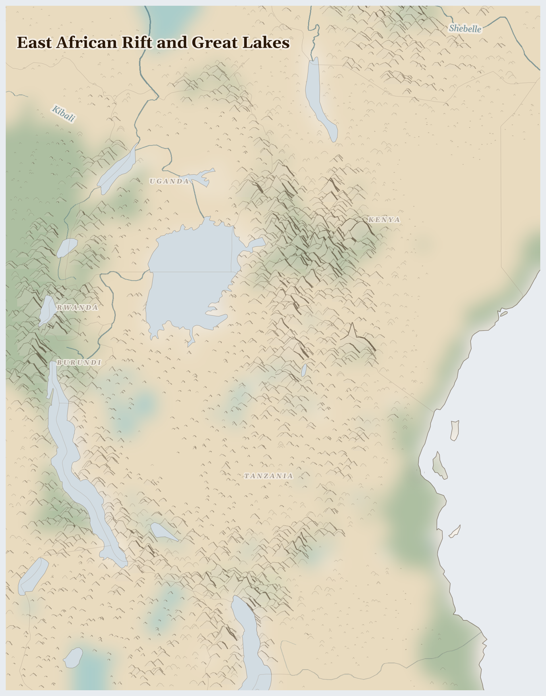

East African Rift and Great Lakes
Tanzania, Burundi, Kenya and 2 more countries
Afrotropic
Here the Earth itself is slowly tearing open — so slowly you'd never feel it — making a long valley with volcanoes, and lakes full of pink flamingos. Around the valley are green highlands where the air is cool even though the equator runs right through.
How Life Works Here
The highlands are perfect for growing things the world loves: tea bushes in bright green rows, coffee trees, and millions of roses grown beside a lake and flown to flower shops far away. Herders keep cattle in the valley, and fishing boats work the great lakes.
Artisanal fishing crews (wooden boats, gill nets), Women dagaa dryers and fish traders at landing sites.
Smallholder tea and coffee farmers (avg. <1 hectare), Women picking tea leaf and sorting coffee cherry.
Pastoral communities (Maasai, Turkana, Karamojong) dependent on bimodal rains for pasture, Lake Victoria fishing and farming communities (35M+) experiencing flooding during positive IOD, Highland …
What Is Happening
This is mostly a peaceful place, and that is worth a thank-you prayer. The hard part is fairness: the people who pick the tea and cut the roses — many of them women — work very long days for very little pay, while the tea and flowers sell for much more far away. And the lake where the roses grow is being drunk dry. People are working on it: farmer groups are teaming up to ask for fairer prices.
Something Wonderful
Scientists believe this valley may be where the very first people lived — footprints millions of years old are pressed into its stone. Every person on Earth may have a great-great-...-grandparent from this valley. It could be everyone's first home.
Let's Do Something Together
Cloud Watching for Rain
Lie on your back and watch the clouds. Big puffy clouds might bring rain! Thin wispy clouds usually mean dry weather. In places where it has not rained for a long time, families watch the sky every day and hope for clouds. Imagine waiting and waiting for rain that does not come.
- blanket for lying on
- sky with clouds
For grown-ups
Prolonged drought triggers cascading crises — crop failure, livestock death, water scarcity, displacement. Communities develop sophisticated indigenous weather knowledge that climate change is now invalidating.
Let Us Pray Together
God, send the rain. Be with families who are waiting and hoping.
Leader: We pray for those who are hungry. For the millions across East African Rift and Great Lakes who cannot meet their daily food needs.
All: Lord, hear our prayer.
Leader: We pray for the displaced. For the thousands driven from their homes.
All: Lord, hear our prayer.
Leader: We pray for those living under violence. For communities enduring fighting in this region.
All: Lord, hear our prayer.
Leader: We pray for Uganda. Especially for Uganda, facing the most severe convergence of crises in this region.
All: Lord, hear our prayer.
I lift up my eyes to the hills; from where is my help to come? My help comes from the Lord, the maker of heaven and earth.
Collect
Grant, we beseech you, merciful Lord, to your faithful people pardon and peace, that they may be cleansed from all their sins and serve you with a quiet mind; through Jesus Christ your Son our Lord, who is alive and reigns with you, in the unity of the Holy Spirit, one God, now and for ever.
Amen.
Talk About It
If a rose in a shop cost the same as a toy, and you knew who grew it, what would be a fair way to share the money?
One Thing We Can Do
If there is tea in your house, find out where it comes from — the box often says. If it says Kenya, you now know the hills it grew on. Thank God for the hands that picked it.